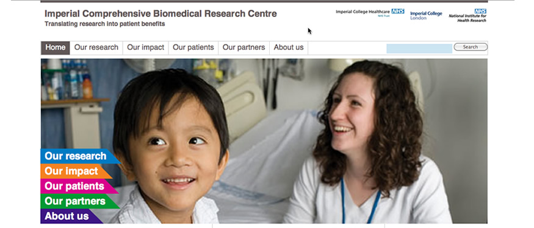

Of course the trick is that all these things need to work together: wayfinding, page layouts, content and imagery all has to be appropriate and developed for your audience and intention. And now that mobile devices make 20%-40% of people looking at your site, this must also work across all devices.
I have a lot of experience working from business strategy and designing user journeys and page layouts and then converting all that into CMS-friendly code. Yes, there are certainly people out there who have more specific knowledge of one part of that journey like user testing, but I believe that my understanding of how it all fits together is examplary.
Here's some examples of work I have done in this area:
Wrapping your head around mobile and responsive web design can be quite a challenge. I have been designing responsive sites since 2012. See this site for the NIHR Imperial BRC as a sample that shifts for mobile, tablet and desktop. Just grab the right-hand side of the browser and pull it in and out to see the page reformat.
This small website of mine is 'mobile first'. This means it is designed first of all to be efficient and effective on a mobile, then I layer in increasing funcitonality and styling as the browsing device gets more sophisticated. Just grab the right-hand side of the browser and pull it in and out to see the page reformat.